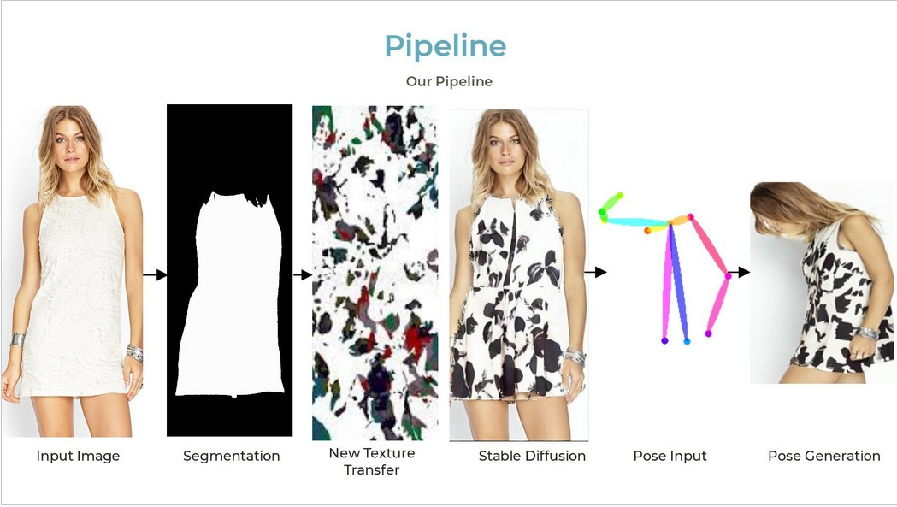
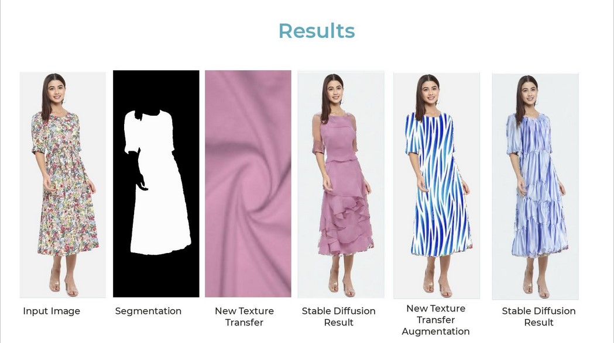
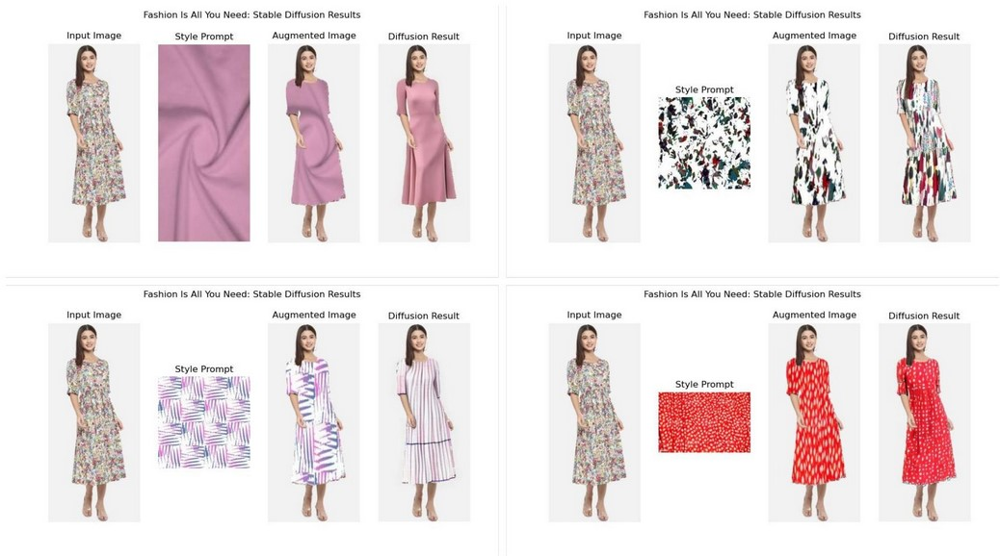

Fashion is All You Need
The incorporation of Artificial Intelligence (AI) into fashion design can bolster the creativity of fashion designers, improve the sustainability of the fashion industry, and reduce the cost of fashion photography. By using AI to generate synthetic images of clothing, designers can experiment with new designs and styles without having to produce physical prototypes. This can save time and money, and it can also help to reduce waste. Additionally, AI can be used to predict trends, so that designers can create clothing that is more likely to be popular. This can help to reduce the amount of unsold clothing, which is a major contributor to environmental pollution. Overall, the use of AI in fashion design has the potential to make the fashion industry more creative, sustainable, and affordable.
Prior Work
Repaint, DiffFashion, InstructPix2Pix, and StableDiffusion are deep learning models that can be used to generate clothes with different textures. Repaint can be used to transfer the texture of one image to another, such as from a painting to a photograph. DiffFashion can be used to generate clothes from scratch, taking into account the shape of the body, the type of fabric, and the desired texture. InstructPix2Pix can be used to generate images from text descriptions, such as a description of a person wearing a specific type of clothing. StableDiffusion can be used to generate high-quality images with realistic textures from noise. These models have the potential to be used by fashion designers to create new and innovative designs. They can be used to generate clothes with different textures, such as denim, leather, or silk. They can also be used to generate clothes from scratch, taking into account the shape of the body, the type of fabric, and the desired texture. Additionally, they can be used to generate images from text descriptions, such as a description of a person wearing a specific type of clothing.
Overall, these models offer a variety of possibilities for fashion designers. They can be used to create new and innovative designs, however our work showed that we do not get enough control over how the texture of the generated clothes.

Our work
When generating images using AI, information such as cloth texture cannot be explained in text and visual context is needed. Thus, for input we take a reference image, reference texture, and a text input to generate new clothes based off the texture input.
First step is Cloth Segmentation. It helps provide the region of focus to the diffusion model and control regions that can be regenerated. For the next step, the segmentation mask is augmented with the cloth texture. To the stable diffusion model, we input the augmented image and also a text prompt: "Complete Woman's dress in high quality", to generate great results.

Conclusion
We were able to generate great results with the method proposed. These can be visualized below.
 